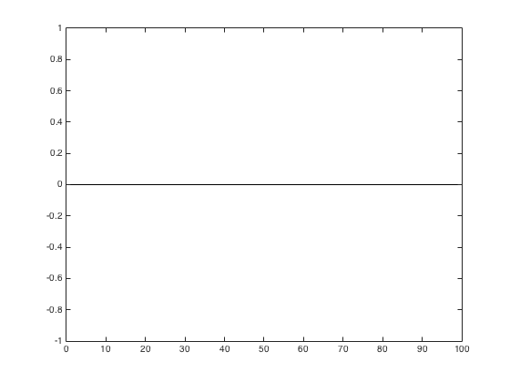

Transform Data
This shows how to transform variables and store within the Tsdata class.
See the matlab code corresponding to this help file to run examples directly in Matlab.
For details of the various ways to load data into Tsdata objects in PROFOR see the file at: matlab code.
Contents
format bank;
1) Loading up data generated in PROFOR
Suppose some time series data have been simulated from a VAR model and stored as a Tsdata object. Load the file containing these time series using the standard Matlab load command.
load( fullfile( proforStartup.pfRootHelpData, 'varData.mat') )
Note: proforStartup.pfRoot points to the root directory of the PROFOR Toolbox.
The object d is of a Tsdata class, size 1 x 4, i.e. a Tsdata object that contains 4 different time series.
Define:
d1 = d(1);
This constructs a new Tsdata object, d1, which only contains the first time series object in d.
2) Check the current transformations
The following commands check the current state of transformation:
(i) transfState shows the transformation state, e.g., if the data have been transformed to growth rates etc.
(ii) conversionState shows if the data have been aggregated
(iii) outlierState shows if the data have been corrected for outliers
(iv) sesAdjState shows if the data have been seasonally adjusted
(v) trendAdjState shows if the data have been trend adjusted.
d1.transfState d1.conversionState d1.outlierState d1.sesAdjState d1.trendAdjState
ans = n ans = n ans = n ans = n ans = n
The states can't be set by the researcher. To work with the data, use the dataSettings property (together with the methods built into the Tsdata class).
d1.dataSettings
ans =
DataSetting with properties:
doSesAdj: 'n'
doTrendAdj: 'n'
doConversionTo: 'n'
doTransfTo: 'n'
doOutlierCorr: 'n'
outlierMethod: [1x1 CellObj]
setOutliersAs: 6.00
trendAdjMethod: [1x1 CellObj]
setLambdaAs: 1600.00
conversionMethod: [1x1 CellObj]
sesAdjMethod: [1x1 CellObj]
2) More transformations
Take a look at all the possible transformations available, in terms of growth rates etc., The first column reports the numeric associated with a particular transformation. The last column reports the string associated with the transformation. Both can be used (see below).
d1.listAllDataTransformations
ans =
'0 = no transformation' 'n'
'1 = log ...' 'log'
'2 = diff ...' 'diff'
'3 = growth ...' 'gr'
'4 = growth diff growth ...' 'grdiffgr'
'5 = log diff ...' 'logdiff'
'6 = log growth ...' 'loggr'
'7 = log growth diff growth ...' 'loggrdiffgr'
'8 = diff yoy ...' 'diffyoy'
'9 = growth yoy ...' 'gryoy'
'10= growth diff growth yoy ...' 'grdiffgryoy'
'11= log diff yoy ...' 'logdiffyoy'
'12= log growth yoy ...' 'loggryoy'
'13= log growth diff growth yoy...' 'loggrdiffgryoy'
Check the current transformation status at any point with the following command:
d1.getTransfDescription
ans = 0 = no transformation
To transform to growth rates, specify the property as 3, which is the code for growth rates (in percent):
d1_original = d1; d1.dataSettings.doTransfTo = 3; d1.transformData;
Then update the state:
d1.transfState
ans = gr
3) Remember Tsdata is a handle class
This means that even though d1 was extracted from d, all changes to d1 will also be made to d1 within d. Hence:
diff_d1 = d1.getData - d(1).getData;
is a time series with zeros. Plot to see this.
plot(diff_d1)
4) Seasonal adjustment
In this example, the data are seasonally adjusted and quarterly growth rates calculated.
(This command currently only runs on Windows in this version of PROFOR; Mac version to come.)
d1.dataSettings.doSesAdj = 'y'; if ~any(strcmpi(computer, {'PCWIN32', 'PCWIN64'})) warning('See issue #78, only have binaries for seasonal adjust for windows at the minute') else d1.sesAdjData; end
The first line prepares for seasonal adjustment. If sesAdj='y', the data are seasonally adjusted; if sesAdj='n' then there is no adjustment.
The second line undertakes the transformation.
With multiple variables to adjust, eg d, there is scope to adjust some variables but not others by using the 'y' switch. For example, first set 'y' for all, but then skip variable 2.
d.setAll('doSesAdj','y') d(2).dataSettings.doSesAdj = 'n'; d.sesAdjData
Next, check the states:
{d.sesAdjState}
ans =
'y' 'n' 'y' 'y'